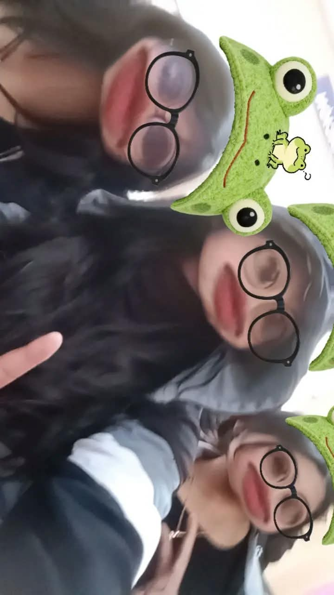

🧬
Genética y herencia
ADN, ARN, reproducción y transmisión de características.
Ver ficha completa →Ministerio de Educación · Nivel secundario
BIO MUNDO es una biblioteca digital diseñada para estudiantes de 1.º a 6.º de secundaria, con temas de biología organizados, visuales y fáciles de consultar.

Temas destacados
ADN, ARN, reproducción y transmisión de características.
Ver ficha completa →Estructura celular, organelos y procesos vitales del cuerpo.
Ver ficha completa →Biodiversidad, cadenas alimentarias, equilibrio y ambiente.
Ver ficha completa →Sistemas del cuerpo humano, prevención y salud integral.
Ver ficha completa →Plan de estudios
Biblioteca por niveles
Cada grado presenta temas clave del currículo de biología para estudiar de forma ordenada y visual.
Fundamentos de Biología
Ver temas → 02La vida y los seres vivos
Ver temas → 03Célula y organización
Ver temas → 04Genética y herencia
Ver temas → 05Genética y evolución
Ver temas → 06Biología avanzada
Ver temas →Recursos visuales
Videos creativos
Un recorrido visual para comprender los organelos y el funcionamiento celular.
Explora la variedad de seres vivos y su relación con los ecosistemas.
Una introducción a la ciencia que estudia los seres vivos y sus procesos.
Clasificación, tipos y generalidades del sistema muscular.
Recursos educativos
Nivel
Tema destacado